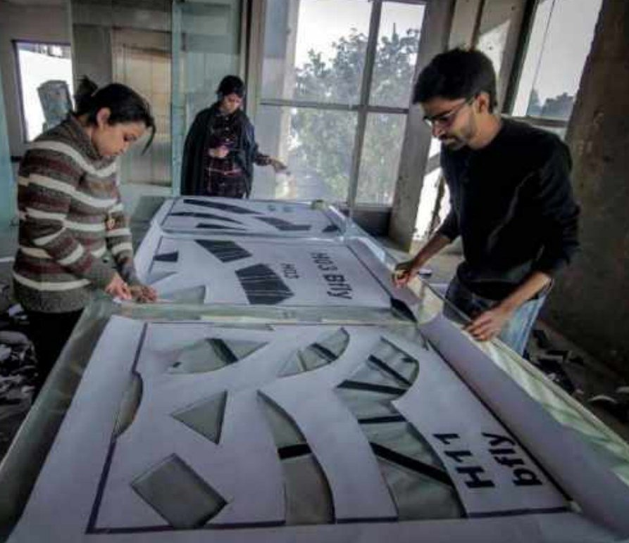

Working on Lodhi Art District, Delhi, for the St+art India Foundation. Twelve artists captured walls across the district in their signature styles — a mural of Rani Laxmi Bai went up on a residence society wall in a pop-art style, painted alongside street artist Lady Aiko.
